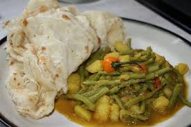

Paratha

Paratha with Curried Gravy
Paratha or buss up shut is a favourite to cook during social events and family reunions.
This recipe serves 10 persons with a set up time of about 25 minutes. The overall cooking time is
is approximately 1 1/2 hours.
Ingredients
- 4 cups of flour
- 6 tablespoons of butter
- 4 teaspoons of bakng powder
- 2 tablespoons of oil
- 1/2 teaspoon of salt
- 1 3/4 cups of water
Directions
- Mix flour, baking powder, salt and water
- Knead to a soft dough and make four balls. Leave for 15 - 30 mins
- Roll out the dough
- Spread butter and sprinkle with flour
- Cut from centre to edge and roll into a cone
- Press the peak and flatten the centre of the cone. Leave for 15 - 30 mins
- Roll out on a flat surface
- Coat the preheated tawah with butter
- Place the flattened dough on the tawah
- Spread the butter on one side then turn the other side to cook
- Spread butter on the other side the same way
- When both sides are cooked, break up the roti with a dabla
- Serve with curried chicken and potato gravy